Dva golemové, jeden had
Entombed Sentinels jsou prastaří kamenní strážci, kteří po tisíciletí drželi Ula'tek uvězněnou — než ji Zul'jan vypustil. Zkorumpovaní jejím jedem se probouzejí jako Breath of Ula'tek (jed a dech) a Blood of Ula'tek (krev a infekce). Bojujete proti oběma najednou, ale jde v podstatě o dva paralelní fighty spojené jedním rytmem.
Golemové nesmí zůstat blízko sebe. Pokud jsou od sebe méně než 40 yardů, získávají Ula'tek's Dominance — 99% snížení utrpěného damage. Rozdělte raid na dvě přibližně stejně silné skupiny, každou k jednomu golemovi, a odtáhněte je na opačné konce místnosti.
Vzdálenost 40 yardů nezávisle potvrzují Icy Veins i Method.gg.
Energy a Vitriolic Stasis. Oba golemové nabíjí energii; při 100 energy vstupují na 30 sekund do Vitriolic Stasis — 99% odolní vůči damage, slabší golem si doléčí HP na úroveň silnějšího (nevyrovnaný damage se tak fakticky vrátí). Cíl je proto udržovat DPS na obě strany vyrovnaný, aby žádný golem nebyl výrazně napřed a stasis vás nezpomalila.
Mark of Acid / Mark of Blood. Hráči do 40 yardů od golema dostávají každých 5 sekund stack tohoto markeru (trvá 40 s). Po každé intermisi proto strany nemění jen tank, ale celá jeho skupina — tím stack vyprší a nenabaluje se donekonečna.
Schopnosti obou golemů
Každá skupina řeší svého golema nezávisle — tanka, healery i DPS rozdělte podle toho, komu na koho zbyde více práce s dispely a pohybem.
Breath of Ula'tek
Blood of Ula'tek
Helical Toxins — hádanka s páry
Po hlavní fázi (obvykle po energy resetu) přichází společná intermise. Každý hráč dostane ikonu s číslem 1, 2 nebo 3 (znázorněné spojenými orby jedu). Cíl: srazit se s jiným hráčem tak, aby se vaše čísla sečetla přesně na 4 — pak efekt zmizí bez následků.
Bezpečná kombinace A
Hráč s 1 stackem najde hráče se 3 stacky.
Bezpečná kombinace B
Dva hráči se 2 stacky se spojí spolu.
Co se stane při chybě: Na spárování máte 28 sekund. Špatný pár (součet ≠ 4) způsobí Cultivated Burst — na Normal jen odhodí hráče zpět, na Heroic už dá 30sekundový DoT, který je prakticky smrtící. Na Mythic přibývá Shifting Protovenom — postižení hráči se musí spárovat jen mezi sebou; srazíte-li se s nepostiženým hráčem, spustí se Protovenom Eruption s knockbackem a damage v okruhu 10 yardů.
Mapa arény
Přímá kopie reálného raid plánu publikovaného guildou na raidstrats.gg — pozice, ikony i poznámky jsou přesně z jejich dat (včetně případných překlepů v poznámkách), nejde o mou interpretaci. Šipkami/tečkami pod obrázkem procházíte jednotlivé scény.
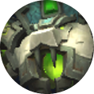
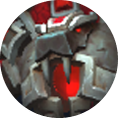


Grps 1,2,3 na zelenou
Grps 4,5,6 na červenou

Zelená nature dmg, Červená shadow dmg
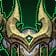
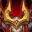

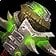
Empowering slam - tankbuster, physical dmg,
15% physical damage taken debuff - reset po swapu
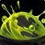
Venom Coagulation - addka každých 60 vteřin
pulzuje raid dmg dokužije, zapotřebí rychle znežít
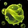
Toxic Droplets - malé soaky, raidwide dmg když se soak missne
každý by se měl aktivně snažit soakovat
Míří na bosse = nenecháme se trefit
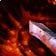
Bloodvenom Injection - tankbuster,
physical dmg + dlouhá stackující dotka
vydží i nějakou dobu po swapu! (personal/extrenal defka)
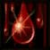
Blighted Blood - dotka na 18s,
potřeba prohealovat nebo dispellnout
Doporučuje se použít defku
Unstable Miasma - Soak jde na random hráče,
stack pod bossem, v rohu roomky
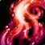
Ten který má méně HP healuje druhého dokud nemají stejně
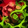
cílem je spojit se s ostatními
Intermise trvá 28 vteřin = 3 prdele času, žádná panika
Pokud debuff neodstraníš, umřeš
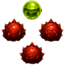
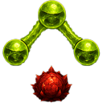
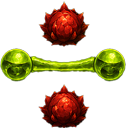
1,2,3 na červenou
4,5,6 na zelenou
Rozdělení raidu: skupiny 1–3 na zelenou, 4–6 na červenou stranu. 40 yardů odstup = 99% dmg redukce. Mark of Acid/Blood podle strany.
Zelená strana: Empowering Slam (tank, reset po swapu), Venom Coagulation (add každých 60s), Toxic Droplets (aktivní soak od všech).
Červená strana: Bloodvenom Injection doznívá i po swapu, Blighted Blood (18s, nutný heal nebo dispel), Unstable Miasma soak v rohu.
Červená strana: bordel (louže) se pokládá v řadě podél stěny místnosti.
Intermezzo: Vitriolic Stasis srovná HP bossů, pak Helical Toxins — spárujte debuffy na součet 4 během 28 sekund.
Fáze 2: výměna stran (1–3 na červenou, 4–6 na zelenou), stejné mechaniky se opakují.
Časová osa fightu
Pull a rozdělení
Bloodlust rovnou na pullu. Ihned rozdělte raid na dvě skupiny, odtáhněte golemy na opačné konce arény, aby nesplnili Ula'tek's Dominance.
Souběžný damage race
Obě skupiny řeší své mechaniky (Toxic Droplets / Venom Coagulation na Breath; Blighted Blood / Unstable Miasma na Blood) a udržují energy obou golemů vyrovnanou.
Vitriolic Stasis
~30 s neporazitelnosti, slabší golem doléčen na úroveň silnějšího. Využijte jako oddechový čas na přesuny a cooldowny.
Helical Toxins
Celý raid řeší párování na součet 4. Po vyřešení se tankové marky/stacky z hlavní fáze vynulují.
Tank swap a další main phase
Po každé intermisi vymění tank i celá jeho skupina stranu (golema), aby stackující debuffy (Empowering Slam, Bloodvenom Injection, Mark of Acid/Blood) měly čas odeznít. Cyklus se opakuje až do zabití obou golemů — snažte se je srazit na nula HP zhruba ve stejnou dobu.
Co sledovat za tanka, healera a DPS
Tankování
- Udržujte golemy alespoň 40 yardů od sebe po celý fight.
- Po každé intermisi vyměňte s celou skupinou stranu — tím se sundá i Empowering Slam buff na golemovi, ne až po X stacích.
- Tank přebírající zelenou stranu po intermisi ať má připravenou defenzivu na doznívající Bloodvenom Injection DoT.
- Snažte se udržet HP obou golemů vyrovnané před Vitriolic Stasis.
Healing
- Blighted Blood dispelujte radši dřív, než samo vyprší (18s trvání).
- Plánujte raid cooldowny na konec hlavní fáze, kdy stacky marků vrcholí.
- Sledujte skupinu řešící Unstable Miasma soak, ať nejsou izolovaní od topheal rangu.
- Vlastní pár v Helical Toxins vyřešte rychle, ať se můžete vrátit k healování.
Damage
- Držte poměr DPS mezi oběma golemy vyrovnaný — nevytahujte jednoho příliš napřed.
- Venom Coagulation spawne zhruba každou minutu — celá zelená skupina na něj swapne a dorazí ho dřív, než přijde další.
- Šlapejte na Toxic Droplets včas (16s do Noxious Blastu) a uhýbejte Living Venomu oběma směry letu.
- V intermisi si předem domluvte pevné dvojice (1↔3, 2↔2), obzvlášť na Mythic.
Normal → Heroic → Mythic
| Obtížnost | Co se mění |
|---|---|
| Normal | Základní verze všech mechanik s velkorysými časovými okny. Chyba v Helical Toxins jen odhodí hráče zpět. |
| Heroic | Living Venom je potřeba uhýbat oběma směry (tam i zpět). Blood Venom louže po Blighted Blood vyžaduje chytré pozicování dispelu/vypršení, ne jen rychlý dispel. Chyba v Helical Toxins (kombinace nad 4, tzv. Cultivated Burst) už hráče zabíjí a nechá po sobě louži. |
| Mythic | Čistě exekuční check: DPS mezi golemy musí být přesně vyvážený, přidává se Shifting Protovenom v intermisi (postižení hráči se párují jen mezi sebou, srážka s nepostiženým = knockback + damage), management prostoru je kritický. |
Kvíz k mechanikám
Šest otázek na hlavní mechaniky fightu. Vyberte odpověď — správná se zvýrazní zeleně, chybná červeně.